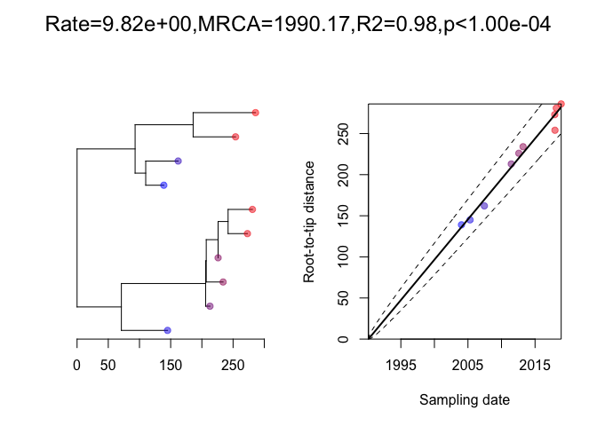
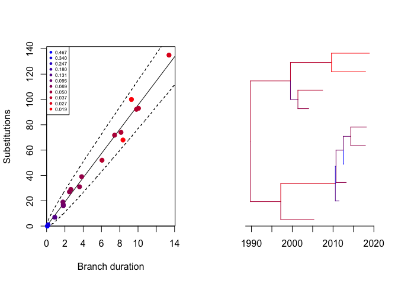
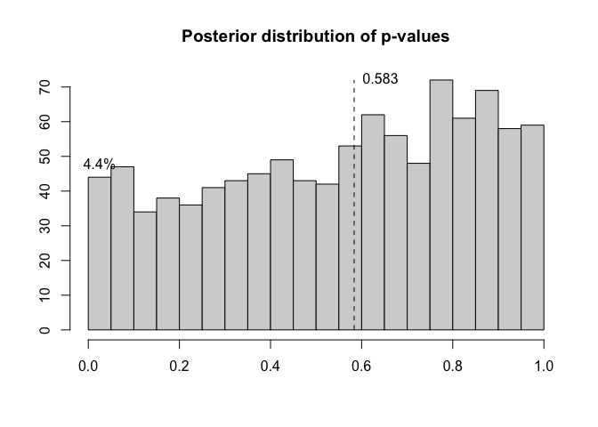

The aim of this package is to diagnose the results of phylogeny dating analysis. Many tools exist to produce dated phylogenies, but there are several factors that can invalidate the results. This includes the confounding effect that population structure can have on dating. But it also includes incorrect assumptions made when running a dating analysis, for example using an inappropriate clock model, not accounting for recombination, etc.
Installation
You can install DiagnoDating from github with:
devtools::install_github("xavierdidelot/DiagnoDating")The package can then be loaded using:
library(DiagnoDating,quietly=T)Example
This is a basic example of usage. First we generate a dated tree with 10 samples between 2000 and 2020:
dates=runif(10,2000,2020)
dt=simcoaltree(dates)
plot(dt)
axisPhylo(backward=F)
Next we generate a phylogenetic tree using a Poisson(10) mutation model, and perform a root-to-tip analysis:

We can run the dating analysis on this phylogeny as follows:

We can perform a posterior predictive check:
p=ppcheck(r,showPlot = T,showProgress = F)
We can see the likelihood of each branch:

We can compute the residuals:
plotResid(r)
We can compute the posterior distribution of residual p-values:
p=postdistpvals(r,showPlot = T)
More information and getting help
For more detailed examples of how to use DiagnoDating, see the vignettes here. See also the help included in the package using the R command help(package='DiagnoDating').
If you have any problem or question please create an issue here or get in touch by emailing xavier.didelot@gmail.com